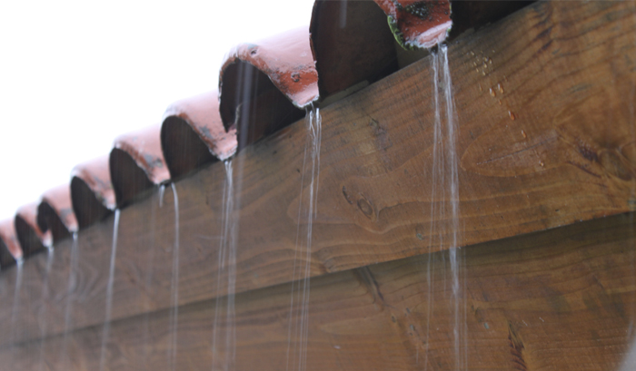
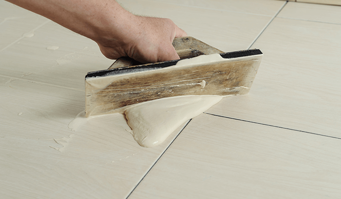
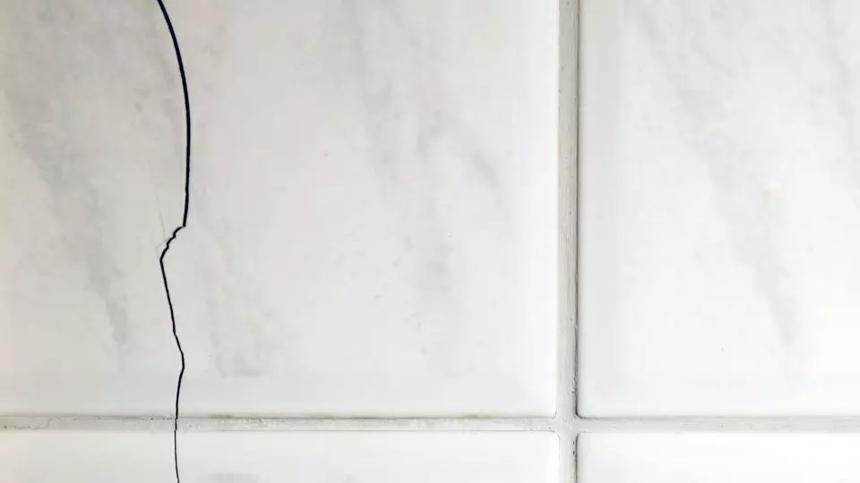
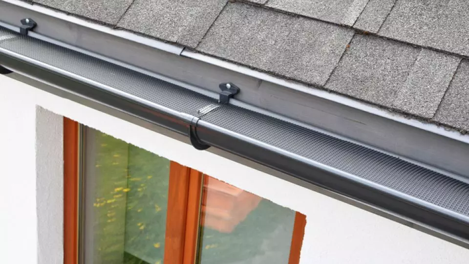

Vai consertar ou reformar seu local de adoração? Não deixe de conferir as dicas abaixo.

Como proteger a telha em época de chuvas?
Telhas soltas, calhas, rufos enferrujados e furados são problemas ocasionados pelo...
Mais
Dicas para renovar rejunte desgastado.
Com o passar do tempo, é natural que o rejunte sofra algum tipo de desgaste, podendo...
Mais
Cerâmica quebra? Veja como consertar.
Os acabamentos são responsáveis pela estética e pela sensação que a pessoa espera passar...
Mais
Você sabe como fazer a vedação de calhas e rufos?
Está com problemas com infiltração, goteiras e vazamentos? Isso é um sinal...
Mais